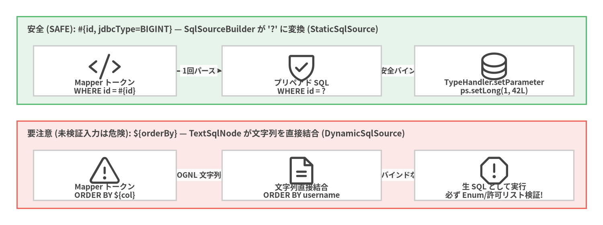
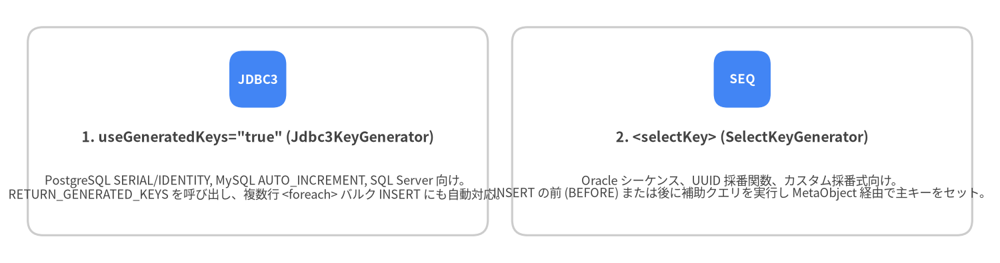

3. Mapper XML と SQL ステートメント
Mapper XML ファイル (mybatis-3-mapper.dtd) は、Java の Mapper インターフェース (namespace="...") と SQL ステートメント (<select>、<insert>、<update>、<delete>) および再利用可能な <sql> フラグメントを結びつけます。
Mapper XML ファイルの基本構造
<mapper namespace="com.example.blog.mapper.AuthorMapper"> 内の各ステートメントの id 属性は、AuthorMapper インターフェース上の同名メソッドに直接対応します。
<?xml version="1.0" encoding="UTF-8" ?>
<!DOCTYPE mapper
PUBLIC "-//mybatis.org//DTD Mapper 3.0//EN"
"https://mybatis.org/dtd/mybatis-3-mapper.dtd">
<mapper namespace="com.example.blog.mapper.AuthorMapper">
<!-- 再利用可能なカラムリストのフラグメント -->
<sql id="authorColumns">
${alias}.id,
${alias}.username,
${alias}.email,
${alias}.created_at AS createdAt
</sql>
<select id="findById" resultType="com.example.blog.domain.Author">
SELECT
<include refid="authorColumns">
<property name="alias" value="a"/>
</include>
FROM authors a
WHERE a.id = #{id,jdbcType=BIGINT}
</select>
</mapper>
#{} PreparedStatement バインドと ${} 文字列展開の違い
#{property} と ${property} のコンパイル処理の違いを正確に理解することは、SQL インジェクション (CWE-89) の完全な防止 とデータベース側の実行計画キャッシュ効率の最大化において不可欠です。

Source Code
from drawlib.canvas import save, setup
from drawlib.diagrams.architecture import ArchitectureDiagram, Node, NodeGroup, PhosphorIcon
from drawlib.styles import Colors, Styles
setup(width=144, height=54, dpi=150)
d = ArchitectureDiagram(
node_style=Styles.Dark,
node_text_style=Styles.DarkBold.patch(text_size=9.2),
edge_style=Styles.Dark.patch(line_width=1.5),
edge_text_style=Styles.DarkBold.patch(text_size=8.8),
node_card_style=Styles.Neutral.patch(shape_fill_color=Colors.White),
)
safe = d.add(
NodeGroup(
"安全 (SAFE): #{id, jdbcType=BIGINT} — SqlSourceBuilder が '?' に変換 (StaticSqlSource)",
width=136,
height=21,
style=Styles.SuccessNeutral,
text_style=Styles.DarkBold.patch(text_size=10.0, halign="left", valign="top"),
),
xy=(4, 29),
)
n_s1 = safe.add(Node("Mapper トークン\nWHERE id = #{id}", icon=PhosphorIcon.CODE, width=34, height=12), xy=(21, 8))
n_s2 = safe.add(Node("プリペアド SQL\nWHERE id = ?", icon=PhosphorIcon.SHIELD_CHECK, width=38, height=12), xy=(68, 8))
n_s3 = safe.add(Node("TypeHandler.setParameter\nps.setLong(1, 42L)", icon=PhosphorIcon.DATABASE, width=38, height=12), xy=(114, 8))
risk = d.add(
NodeGroup(
"要注意 (未検証入力は危険): ${orderBy} — TextSqlNode が文字列を直接結合 (DynamicSqlSource)",
width=136,
height=21,
style=Styles.DangerNeutral,
text_style=Styles.DarkBold.patch(text_size=10.0, halign="left", valign="top"),
),
xy=(4, 4),
)
n_r1 = risk.add(Node("Mapper トークン\nORDER BY ${col}", icon=PhosphorIcon.WARNING, width=34, height=12), xy=(21, 8))
n_r2 = risk.add(Node("文字列直接結合\nORDER BY username", icon=PhosphorIcon.FILE_TEXT, width=38, height=12), xy=(68, 8))
n_r3 = risk.add(Node("生 SQL として実行\n必ず Enum/許可リスト検証!", icon=PhosphorIcon.WARNING_OCTAGON, width=38, height=12), xy=(114, 8))
n_s1.connect(n_s2, label="1回パース")
n_s2.connect(n_s3, label="型安全バインド")
n_r1.connect(n_r2, label="OGNL 文字列")
n_r2.connect(n_r3, label="'?' バインドなし")
d.draw(xy=(0, 0))
save()
| 構文 | 内部メカニズム | SQL インジェクション耐性 | 用途 |
|---|---|---|---|
#{prop} |
SqlSourceBuilder が ? に置換し、TypeHandler.setParameter(ps, i, val) で型安全にバインド |
あり (100% 安全) | 全パラメータの 99% (WHERE、VALUES、SET、LIMIT、LIKE など)。 |
${prop} |
prepareStatement の前に TextSqlNode が SQL 文字列へ直接結合 |
なし (外部入力は危険) | 動的なテーブル名や ORDER BY のカラム識別子 (必ず Java の enum または許可リストで検証済みの値のみに使用)。 |
#{} 内で指定可能な詳細属性
#{} トークン内では、必要に応じて型やスケールを明示的に指定できます。
#{amount, javaType=java.math.BigDecimal, jdbcType=NUMERIC, numericScale=2, typeHandler=com.example.MoneyTypeHandler}
<insert>・<update>・<delete> と自動生成キーの取得
更新系ステートメントは executeUpdate() が影響を与えた行数 (int または long)、あるいは boolean (rows > 0) を返します。データベース側で自動採番された主キーを引数のオブジェクトへ書き戻すには、以下の 2 つの方式を使用します。

Source Code
from drawlib.canvas import save, setup
from drawlib.smartarts import CardList
from drawlib.styles import Colors, Styles
setup(width=144, height=38, dpi=150)
cards = CardList(
style=Styles.Neutral.patch(shape_fill_color=Colors.White),
text_style=Styles.DarkBold.patch(text_size=10.2),
description_style=Styles.Dark.patch(text_size=8.8),
badge_shape="rounded_rect",
badge_style=Styles.PrimaryFlat,
badge_text_style=Styles.WhiteBold.patch(text_size=9.0),
direction="horizontal",
spacing=3.5,
)
cards.add(
'1. useGeneratedKeys="true" (Jdbc3KeyGenerator)',
"PostgreSQL SERIAL/IDENTITY, MySQL AUTO_INCREMENT, SQL Server 向け。\nRETURN_GENERATED_KEYS を呼び出し、複数行 <foreach> バルク INSERT にも自動対応。",
badge_text="JDBC3",
)
cards.add(
"2. <selectKey> (SelectKeyGenerator)",
"Oracle シーケンス、UUID 採番関数、カスタム採番式向け。\nINSERT の前 (BEFORE) または後に補助クエリを実行し MetaObject 経由で主キーをセット。",
badge_text="SEQ",
)
cards.draw((4.0, 4.0), width=136.0, height=30.0, align="bottom_left")
save()
パターン 1: useGeneratedKeys="true" (PostgreSQL, MySQL, MariaDB, H2, SQL Server)
<insert id="insertAuthor"
useGeneratedKeys="true"
keyProperty="id"
keyColumn="id">
INSERT INTO authors (username, email, created_at)
VALUES (#{username}, #{email}, #{createdAt})
</insert>
List<Author> を渡す複数行バルク <foreach> INSERT でも、各要素の id プロパティへ採番された主キーが自動的に格納されます。
<insert id="insertAuthorsBatch"
useGeneratedKeys="true"
keyProperty="id"
keyColumn="id">
INSERT INTO authors (username, email, created_at)
VALUES
<foreach item="author" collection="list" separator=",">
(#{author.username}, #{author.email}, #{author.createdAt})
</foreach>
</insert>
パターン 2: <selectKey> (Oracle シーケンスやカスタム採番式)
<insert id="insertAuthorWithSequence">
<selectKey keyProperty="id" resultType="long" order="BEFORE">
SELECT author_seq.NEXTVAL FROM dual
</selectKey>
INSERT INTO authors (id, username, email)
VALUES (#{id}, #{username}, #{email})
</insert>
@Param による複数引数のバインド
Mapper メソッドが 2 つ以上の引数 を受け取る場合は、XML 側で位置依存の #{param1}・#{param2} ではなく明確な名前で参照できるよう、各引数に @Param("...") を付与します。
List<Post> findByAuthorAndStatus(
@Param("authorId") long authorId,
@Param("status") PostStatus status,
@Param("limit") int limit);
<select id="findByAuthorAndStatus" resultType="Post">
SELECT id, author_id, title, status, published_at
FROM posts
WHERE author_id = #{authorId}
AND status = #{status}
ORDER BY published_at DESC
LIMIT #{limit}
</select>